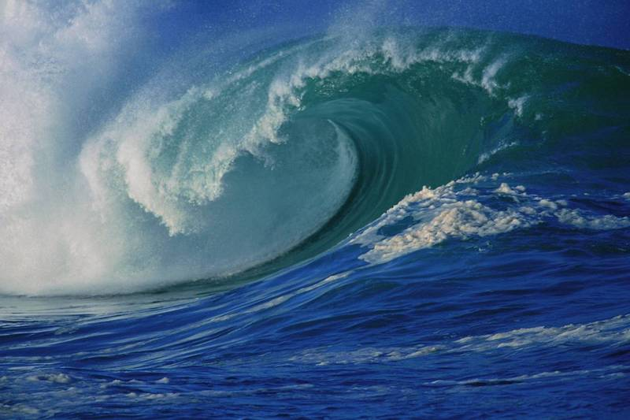

Waves
Wave Energy
Future Energy From the Sea
- Sea waves offer a higher energy density than other kinds of renewable energy sources;
- With the support of prevailing winds, waves can travel large distances with little energy loss.
 Wave Energy Converters
Wave Energy Converters
Wave Energy Converters
Massive Energy Harvest Tools
- Wave power devices can generate electrical power up to 90% of the time, while that of wind and solar devices compared is about 20-30%;
- Generally, offshore devices have a lower negative impact, compared with other energy generators in use.